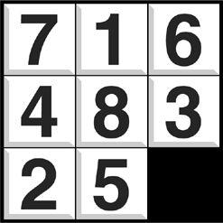
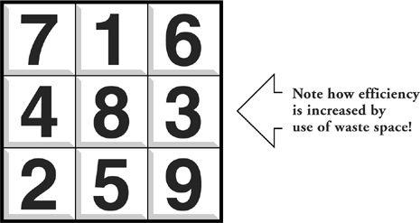

Part One
Slack
In an earlier age, when you had a bit of free time on your hands, you might have occasionally played around with a little puzzle game like the one pictured to the right. The object of the game is to slide the numbered tiles successively into the open space, in order to effect a perfect ordering.

Getting the tiles into order is a distinctly nontrivial exercise. It’s hard enough with the game in its traditional form. But now consider a modified—dare I say improved?—form such as the one shown on the next page.
Now instead of eight tiles and one open space, we have a game with nine tiles and no open space. The efficiency of this layout is improved by 11.1 percent, since the waste space is gone, and all the squares are 100 percent in use. (Chances are that as you read these words, someone in your organization is applying the same logic to the office and seating plan.) Efficiency is improved, but something else is lost. Without the open space, there is no further possibility of moving tiles at all. The layout may be optimal as it is, but if time proves otherwise, there is no way to change it.

The open space represents what I call slack, the degree of freedom required to effect change. Slack is the natural enemy of efficiency, and efficiency is the natural enemy of slack. And there is the rub: There are things you can do to make an organization more efficient that interfere with its ability to change and reinvent itself later.
For the moment, I propose that you consider the nine-tile game (with no open space) to be a symbol of your organization: improved, restructured, efficient as all get-out … but no longer able to change.